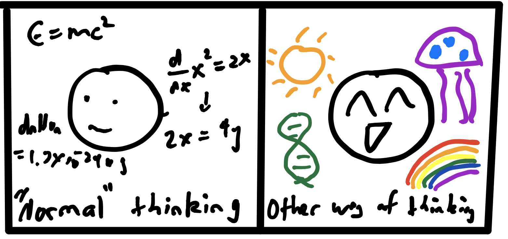
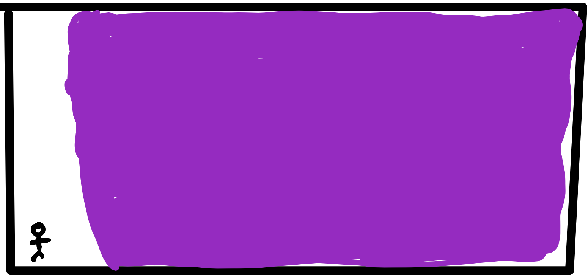
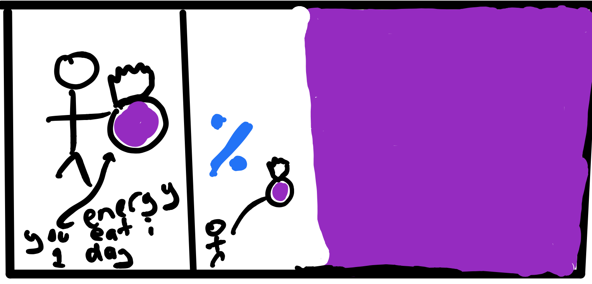
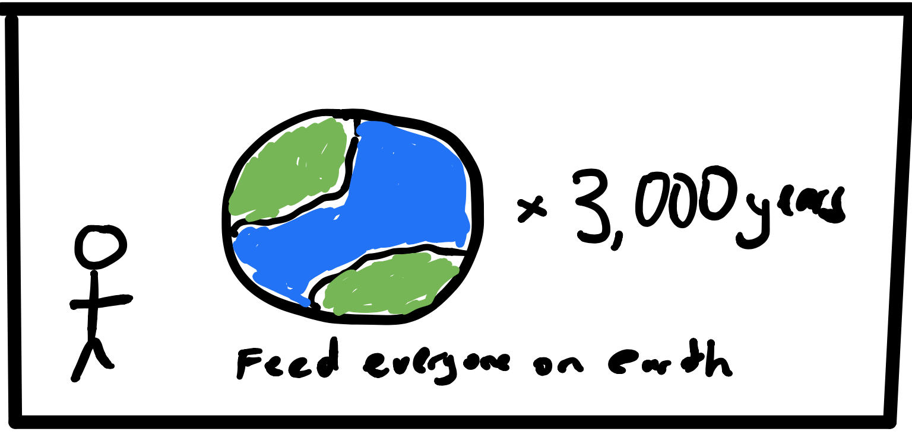
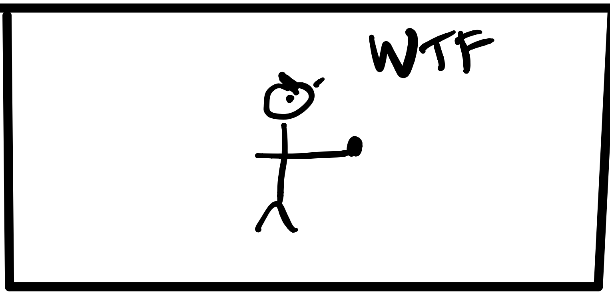
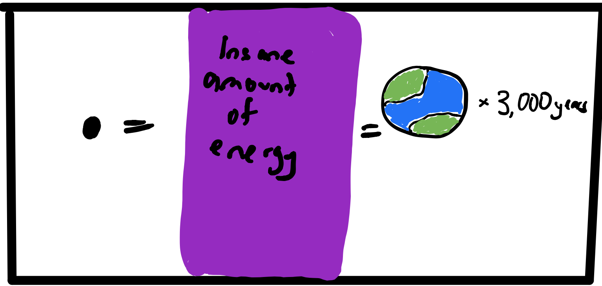
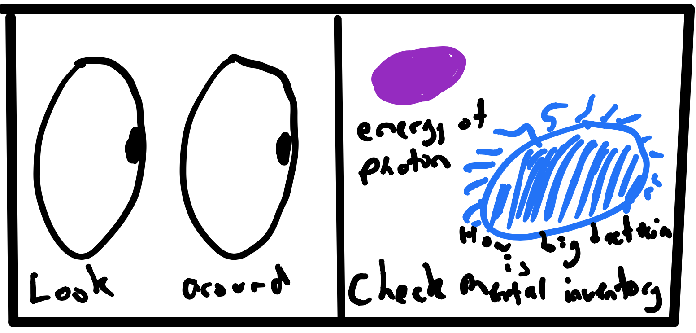
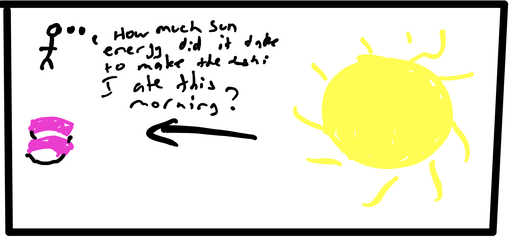
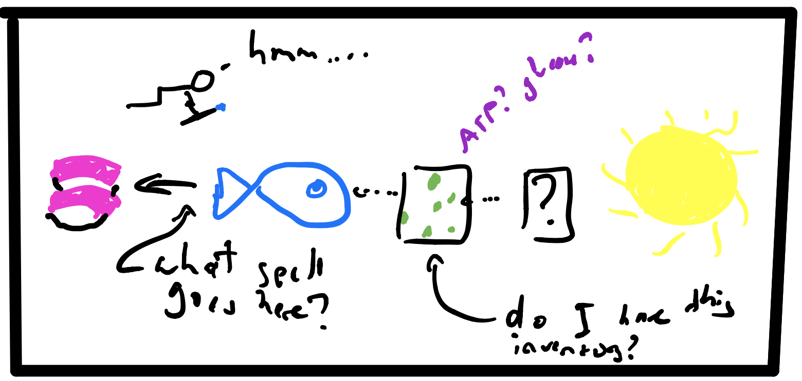
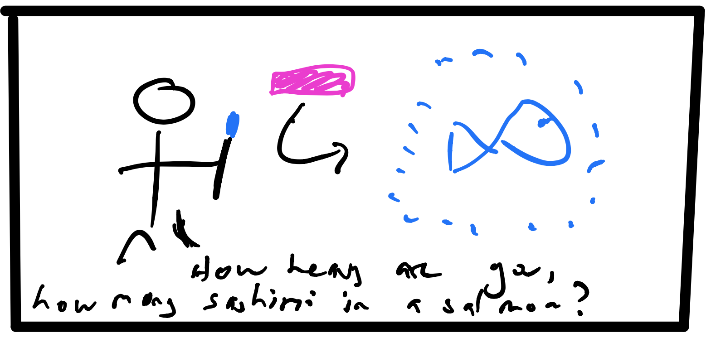

first episode
There are a few ways in which you can think about things. Here are two of them

Many people (myself included) grew up thinking that the first kind of thinking was the "serious, good" thinking we would do once we were scientists.
The second kind of thinking, if we ever did it, was kind of like daydreaming.
I call the second kind of thinking ‘questing’. And, now, I think it’s really helpful to spend part of your time questing if you want to learn new stuff and come up with new ideas.
So, below, I’ll try to give a quick guide to thinking in this style.
There are few problems, which I’ll address upfront.
Problem #1 - you need to know some stuff to quest. If you don’t have any stuff in your head to quest with, it probably won’t work.
Problem #2 - it’s really really really hard to teach questing because it happens all in your mind, so it’s hard to know we’re experiencing the same thing
*although - see appendix - many great thinkers have described things that sound similar to questing
*also quick caveat - do you know how you normally think? If, for example, you have aphantasia you might end up doing this differently than we do. A guide to thinking styles here.
OK, so let’s get started.
Elements of a good quest:
Spell = how to change one thing into another, or how to link two things
AKA an equation (although people often think that means something different than what we’re saying here)
Most people think equation =
YES AND NO. Your mind making a picture/relation thing that gives meaning to those letters is what makes it powerful! Just those letters don’t mean a thing. Imagine scratching those letters in sand. Would they mean anything to a passing chimpanzee? Nope! The stuff in our head that has a bunch of context for what ‘E’ etc is is what gives it meaning.
So, once you understand an equation, it might look more complex in your head.
That’s where most people feel like things might stop in school. But if you’re questing, you’ve only just begun. So, now you kind of know what you can put into parts of this equation, but what does that mean?
Here’s an example of what you might do if you were on a quest with E = mc^2
In fact, you might be surprised at how much energy a rock has
To make sense of it, you might try to find something to compare it to
And you might still be surprised at the answer.
The rock has bunch of energy - about the energy everyone on the planet would need to eat to sustain themselves for 3000 years.

You might also, at this point, be asking why we can’t just feed ourselves with rocks.
Now that we’ve used the spell E = mc^2 once, we have a better feel for the power it can give us to poke at the real world. But we still totally don’t understand it!
Mental inventory
You’ll notice we needed some extra stuff for that example to make sense.
Speed of light = 3x10^9m/s^2
Calories a human eats in a day = 2000 kcal
Humans on planet = 10^7
Days in year = 365
Basically, this is stuff you can store in your mental inventory. It might seem boring - you don’t have to store it, you can definitely look it up each time, it’s just that if it takes you 60 seconds to google and check sources and find the best answer, you’re going to go ~60x slower in your thought experiments than you might otherwise. It’s kind of like choosing what to store locally vs on hard drive. So, you don’t have to memorize things, but remembering common stuff will really make things go a lot faster.
Gem
Notice that picture we got at the end - a confused person holding a rock
You could also represent it, roughly, mentally as

This is a gem. We like to store these. They give you quick heuristics for understanding the world. For example, if someone ever tells you ‘there’s not enough energy on planet earth to do x’, you can with reasonable certainty answer back ‘yup, no, there actually is. We just can’t access it’. And then you might wonder, if there’s all this energy on earth, why can’t we access it?
How to do this regularly
(because it is fun)
1. Find a place / mental space to get into the right creative/curious state
2. Feel curious about something
3. Decide where you might want to go
4. Try to get there
You might need to add some hints to your mental inventory along the way
You might need to add some hints to your mental inventory along the way
So, you might ask yourself, what does all this have to do with quantitative biology?
Well, really, when we talk about biology, particularly molecular biology, we’re talking about a nanoscale world built by a bunch of self-replicating robots that is more complex than any human city in existence. So, how on earth do we think about that? What questions can we ask? Why don’t we just look at it?
WELCOME TO THE WORLD OF THE TINY MACHINES